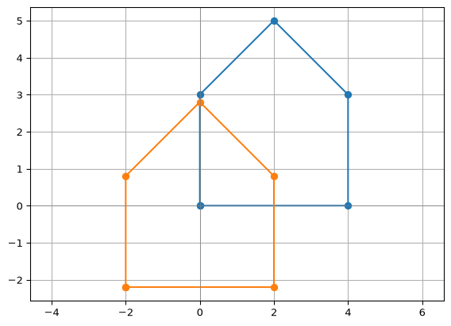
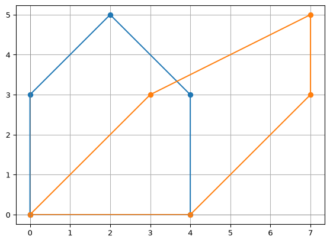
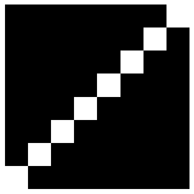
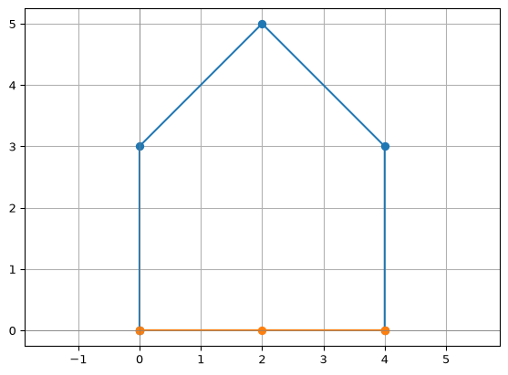
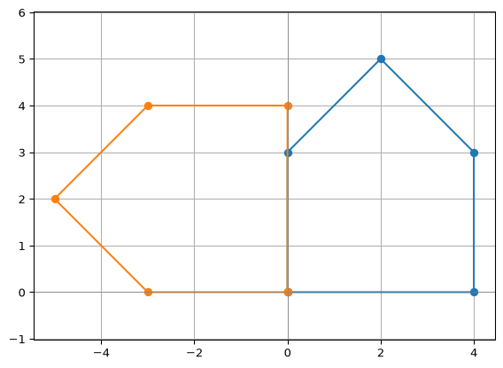
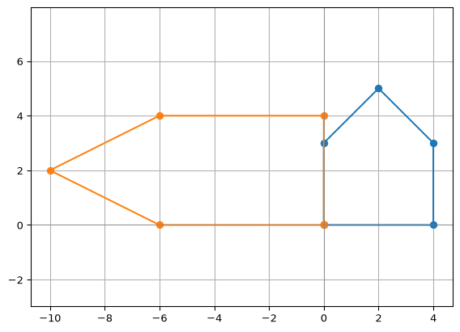
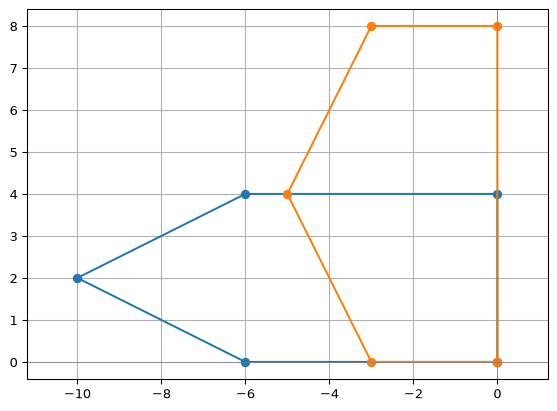

import numpy as np
import matplotlib.pyplot as plt
def show(image):
"""Display a 2D array as a grayscale image (0 = black, 1 = white)."""
plt.imshow(image, cmap="gray", vmin=0, vmax=1)
plt.axis("off")
plt.show()
def draw(*shapes):
"""Draw one or more polygons given as arrays of points with shape (n, 2)."""
for shape in shapes:
closed = np.vstack([shape, shape[:1]]) # repeat the first point to close the polygon
plt.plot(closed[:, 0], closed[:, 1], marker="o")
plt.axhline(0, color="gray", linewidth=0.5)
plt.axvline(0, color="gray", linewidth=0.5)
plt.axis("equal")
plt.grid(True)
plt.show()Array Functions
Module 3: NumPy
Array Functions
In Array Arithmetic and Broadcasting, we multiplied whole arrays at once. Now we will use NumPy’s built-in functions to go further: aggregate arrays along an axis, sort and search them, describe them with statistics, apply mathematical functions, and do linear algebra with matrices.
We continue with the same data and helper functions as in the first part.
students = ["Ana", "Bruno", "Chloe", "Diego", "Emma", "Farid"]
# Points of each exercise: 2 open problems, 3 debugging, 6 multiple choice
weights = np.array([20, 20, 10, 10, 10, 5, 5, 5, 5, 5, 5])
marks = np.array([
[0.75, 1, 0.5, 1, 0.5, 1, 1, 0, 1, 1, 1], # Ana
[0.5, 0.25, 1, 0.5, 0, 1, 0, 1, 1, 0, 1], # Bruno
[1, 1, 1, 1, 0.5, 1, 1, 1, 0, 1, 1], # Chloe
[0.25, 0.5, 0.5, 0.5, 0.5, 0, 1, 0, 1, 0, 1], # Diego
[1, 1, 0.5, 1, 1, 1, 0, 1, 1, 1, 1], # Emma
[0.5, 0.5, 0.5, 0, 1, 1, 1, 0, 0, 1, 0], # Farid
])
# Points earned in each exercise, from the first part
points = marks * weights
# The corners of a house, one point (x, y) per row
house = np.array([
[0, 0], # bottom-left
[4, 0], # bottom-right
[4, 3], # top-right
[2, 5], # roof
[0, 3], # top-left
])
corners = ["bottom-left", "bottom-right", "top-right", "roof", "top-left"]
# The face from Session 14
face = np.zeros((8, 8))
face[2, 2] = 1
face[2, 5] = 1
face[5, 2:6] = 1
face[4, 1] = 1
face[4, 6] = 1Aggregation Functions
np.sum() adds all the elements of an array. For points, that would be the total points of the whole class, which is not what we want:
print(np.sum(points))405.0The axis argument chooses the dimension that is “collapsed”. To add the points of each student, we sum along the exercises, which is dimension 1 (the columns). That was the last piece of our one-line grading:
final_grades = np.sum(points, axis=1) / 10
print(final_grades)[8. 5. 9. 4.5 9. 5. ]The same works with the house. Summing along dimension 0 (the rows) adds the coordinates of all the points: one value for \(x\), and one for \(y\).
print(np.sum(house, axis=0))[10 11]Summing along dimension 1 (the columns) gives one value per point, \(x + y\):
print(np.sum(house, axis=1))[0 4 7 7 3]A good way to remember it: the axis you pass is the one that disappears from the shape. house has shape (5, 2); axis=0 leaves (2,), one value per coordinate, and axis=1 leaves (5,), one value per point.
Other aggregations work the same way. np.min() and np.max() give the bounding box of the house, the smallest rectangle that contains it:
print(np.min(house, axis=0))
print(np.max(house, axis=0))
print(np.max(house, axis=0) - np.min(house, axis=0)) # width and height[0 0]
[4 5]
[4 5]np.prod() multiplies all the elements, and np.cumsum() keeps every partial sum:
print(np.prod(np.array([1, 2, 3, 4])))
print(np.cumsum(np.array([1, 2, 3, 4])))24
[ 1 3 6 10]
Exercise: Centering the Shape
- Compute the center of the house: the mean of its corners, one value for \(x\) and one for \(y\).
- Move the house so that its center is at the origin \((0, 0)\).
- Check that the center of the new house is \((0, 0)\), and draw both.
Solution
center = np.mean(house, axis=0)
print(center)
centered = house - center # (5, 2) - (2,): broadcasting
print(np.mean(centered, axis=0))
draw(house, centered)[2. 2.2]
[ 0.00000000e+00 -1.77635684e-16]
You may see a tiny number such as -1.8e-16 instead of 0. Computers store decimals with limited precision, so very small rounding errors appear.
Exercise: The Robot
A robot starts at the origin and makes these moves, one vector per row:
steps = np.array([[1, 0], [1, 0], [0, 1], [-1, 1], [0, 1]])- Using the cumulative sum, compute the position of the robot after every step.
- After which step is the robot at \((1, 2)\)? You can read it from the output.
- Where does it finish? Get it with one function, without the cumulative sum.
Solution
steps = np.array([[1, 0], [1, 0], [0, 1], [-1, 1], [0, 1]])
positions = np.cumsum(steps, axis=0)
print(positions)
print(np.sum(steps, axis=0))[[1 0]
[2 0]
[2 1]
[1 2]
[1 3]]
[1 3]The robot is at \((1, 2)\) after step 4, and it finishes at \((1, 3)\): the sum of all the moves, just as you add vectors tip to tail.
Sorting and Searching
Which student got the highest grade? np.argmax() returns the index of the largest value, which we can use with our list of names.
best = np.argmax(final_grades)
print(best, students[best])2 ChloeThe same question for the house: which corner is the highest?
y = house[:, 1]
highest = np.argmax(y)
print(highest, corners[highest])3 roofnp.argmin() works the same way for the smallest value. When there is a tie, both return the first one:
lowest = np.argmin(y)
print(lowest, corners[lowest])0 bottom-leftnp.argsort() returns the indices that would sort the array, from the lowest to the highest value:
order = np.argsort(y)
print(order)[0 1 2 4 3]
Exercise: The Farthest Corner
The length (norm) of a vector \((x, y)\) is \(\sqrt{x^2 + y^2}\). Compute the distance from every corner of the house to the origin, without a loop, and print the name of the farthest corner.
Solution
distances = np.sqrt(np.sum(house ** 2, axis=1))
print(distances)
print(corners[np.argmax(distances)])[0. 4. 5. 5.38516481 3. ]
roofSquare every coordinate, add along each row with axis=1, and take the square root. NumPy already has this function, np.linalg.norm():
print(np.linalg.norm(house, axis=1))[0. 4. 5. 5.38516481 3. ]
Exercise: Closest to Farthest
Print the names of the corners from the closest to the farthest from the origin.
Solution
for i in np.argsort(distances):
print(corners[i], round(distances[i], 2))bottom-left 0.0
top-left 3.0
bottom-right 4.0
top-right 5.0
roof 5.39To go from the farthest to the closest, reverse the order with the slice [::-1].
Statistical Functions
How did the class do as a whole? NumPy computes the usual descriptive statistics.
The mean is the average of a data set.
print("Mean:", np.mean(final_grades))Mean: 6.75The median is the middle value when the data set is ordered.
print("Median:", np.median(final_grades))Median: 6.5The standard deviation measures the dispersion of data from its mean.
print("Standard Deviation:", np.std(final_grades))Standard Deviation: 1.9525624189766635Variance is the square of the standard deviation.
print("Variance:", np.var(final_grades))Variance: 3.8125They accept the axis argument too. This is the average mark of each exercise:
print(np.mean(marks, axis=0))[0.66666667 0.70833333 0.66666667 0.66666667 0.58333333 0.83333333
0.66666667 0.5 0.66666667 0.66666667 0.83333333]
Exercise: Ten Dice
You roll a die ten times:
rolls = np.array([3, 6, 2, 6, 1, 5, 6, 4, 2, 6])Compute the mean, median, mode, standard deviation, and variance of the rolls. NumPy has no mode function: look at np.unique() with the argument return_counts=True.
Solution
rolls = np.array([3, 6, 2, 6, 1, 5, 6, 4, 2, 6])
print("Mean:", np.mean(rolls))
print("Median:", np.median(rolls))
# Count each unique value and pick the most frequent
values, counts = np.unique(rolls, return_counts=True)
print("Mode:", values[np.argmax(counts)])
print("Standard Deviation:", np.std(rolls))
print("Variance:", np.var(rolls))Mean: 4.1
Median: 4.5
Mode: 6
Standard Deviation: 1.8681541692269403
Variance: 3.4899999999999998Mathematical Functions
NumPy also provides the usual mathematical functions, applied element by element.
u = np.array([1, 2, 3])
print(np.sqrt(u))[1. 1.41421356 1.73205081]# For higher roots, we can just operate as we do with arrays
print(u ** (1 / 3))[1. 1.25992105 1.44224957]So why use np.sqrt if we can do **(1/2)?
np.sqrt() clearly communicates the intended operation and uses NumPy’s optimized array implementation. The expression arr ** (1 / 2) is also valid. The following optional timing experiment should be run manually rather than whenever the notes are rendered.
arr = np.arange(1, 10000) # We use a very big array
for _ in range(10000):
np.sqrt(arr)
# We are not printing anything, because we do not want to fill the output
# We only want to see how much time this takes!for _ in range(10000):
arr**(1/2)
# We are not printing anything, because we do not want to fill the output
# We only want to see how much time this takes!The same logic applies to exponentiation!
# Exponentiation
print(np.exp(u))[ 2.71828183 7.3890561 20.08553692]Geometry Functions
NumPy can do more than just element-wise operations. It also supports matrix multiplication, transposition, and other matrix math.
Dot products: For one-dimensional vectors, np.dot() computes the usual dot product.
\[\mathbf{u} \cdot \mathbf{v} = \sum_i u_i v_i\]
Look closely at the formula: multiply element by element, then add.
v = np.array([4, 0, -1])
print(np.dot(u, v))
print(np.sum(u * v))
print(u @ v)1
1
1Two vectors are perpendicular when their dot product is zero:
print(np.array([1, 2]) @ np.array([-2, 1]))0Matrix multiplication:
\[A\ B = \begin{pmatrix} a_{11} & a_{12} \\ a_{21} & a_{22} \end{pmatrix} \begin{pmatrix} b_{11} & b_{12} \\ b_{21} & b_{22} \end{pmatrix} = \begin{pmatrix} a_{11}b_{11} + a_{12}b_{21} & a_{11}b_{12} + a_{12}b_{22} \\ a_{21}b_{11} + a_{22}b_{21} & a_{21}b_{12} + a_{22}b_{22} \end{pmatrix}\]
# Matrix multiplication (option A)
A = np.array([[1, 2], [3, 4]])
B = np.array([[4, 3], [2, 1]])
C = np.matmul(A, B)
print(C)[[ 8 5]
[20 13]]# Matrix multiplication (option B)
C = A @ B
print(C)[[ 8 5]
[20 13]]Every element of a matrix product is the dot product of a row of the first matrix with a column of the second. So the product of the table of marks, (6, 11), with the vector of weights, (11,), gives one dot product per student: our final grades, as a single matrix product.
print(marks @ weights / 10)[8. 5. 9. 4.5 9. 5. ]For two-dimensional arrays, np.dot(A, B) performs matrix multiplication too. Prefer the @ operator when that is what you mean because it makes the operation explicit.
If you want the sum of element-wise products of two matrices—the Frobenius inner product—write it directly:
# Sum of element-wise products
frobenius_product = np.sum(A * B)
print(frobenius_product)20Both dot and matmul are used for matrix multiplication in NumPy, but they behave differently, especially when dealing with higher-dimensional arrays (i.e., tensors). The primary difference emerges in multi-dimensional array multiplication.
The official documentation says: matmul differs from dot in two important ways.
- Multiplication by scalars is not allowed.
- Stacks of matrices are broadcast together as if the matrices were elements.
Cross product: A cross product is defined for vectors with two or three components. For three-dimensional vectors, the result is another three-dimensional vector perpendicular to both inputs:
c = np.cross(u, v)
print(c)
print(c @ u, c @ v) # both 0: perpendicular[-2 13 -8]
0 0For two-dimensional vectors, the result is the scalar \(u_1v_2-u_2v_1\). With a stack of vectors, NumPy applies the operation to corresponding rows.
# Two stacks of 2D vectors
p = np.array([[1, 2], [3, 4]])
q = np.array([[4, 3], [2, 1]])
# One scalar cross product per row
print(np.cross(p, q))ValueError: Both input arrays must be (arrays of) 3-dimensional vectors, but they are 2 and 2 dimensional instead.Transposition:
\[A^T = \begin{pmatrix} a_{11} & a_{12} \\ a_{21} & a_{22} \end{pmatrix}^T = \begin{pmatrix} a_{11} & a_{21} \\ a_{12} & a_{22} \end{pmatrix}\]
a = np.array([[1, 2, 3], [4, 5, 6]])
print(a)
# Matrix transposition
print(a.T)[[1 2 3]
[4 5 6]]
[[1 4]
[2 5]
[3 6]]Linear Transformations
In your linear algebra class, a \(2 \times 2\) matrix \(M\) transforms a point \(p\), written as a column, into \(M p\). With NumPy, we can transform all the points of a shape at once. Our points are rows, not columns, so we transpose the house, multiply, and transpose back:
S = np.array([[2, 0],
[0, 1]]) # stretch horizontally
print((S @ house.T).T)[[0 0]
[8 0]
[8 3]
[4 5]
[0 3]]Since \((M P^T)^T = P M^T\), the same result is shorter to write as house @ S.T:
print(house @ S.T)[[0 0]
[8 0]
[8 3]
[4 5]
[0 3]]Compare it with house * np.array([2, 1]) from the broadcasting section: it is the same stretch. But some transformations cannot be done with broadcasting. A shear moves every point to the right in proportion to its height:
H = np.array([[1, 1],
[0, 1]]) # shear
draw(house, house @ H.T)
Matrices also transform images. Let P be the identity matrix with its rows in reverse order:
P = np.eye(8)[::-1]
show(P)
The face is symmetric, so let’s make it wink first, to see the effect of each flip:
wink = face.copy()
wink[2, 5] = 0 # close the right eye...
wink[2, 4:7] = 1 # ...as a horizontal line
show(wink)
Exercise: Flipping with a Matrix
Show P @ wink, wink @ P, and wink.T. What does multiplying by P on the left do? And on the right? Which line does the transpose use as a mirror? Compare with the slices [::-1] from the last session.
Solution
show(P @ wink) # upside down
show(wink @ P) # mirror, left and right swapped
show(wink.T) # mirror along the main diagonalMultiplying by P on the left reverses the rows, the same as wink[::-1]. On the right, it reverses the columns, the same as wink[:, ::-1]. The transpose swaps rows and columns, so it mirrors the image along the main diagonal.
print(np.array_equal(P @ wink, wink[::-1]))
print(np.array_equal(wink @ P, wink[:, ::-1]))True
True
Exercise: Matrix Product with a Transpose
Let \(A\) be the \(3 \times 4\) matrix containing the integers from 1 to 12, ordered by rows. Compute the following matrix operation:
\[A B^T / 6\]
Where
\[B=\begin{pmatrix} -1 & 0 & 0 & -1\\ 0 & 1 & 1 & 0\\ 1 & -1 & 1 & -1 \end{pmatrix}\]
Solution
A = np.arange(1, 13).reshape(3, 4)
B = np.array([
[-1, 0, 0, -1],
[0, 1, 1, 0],
[1, -1, 1, -1]
])
result = (A @ B.T) / 6
print(result)[[-0.83333333 0.83333333 -0.33333333]
[-2.16666667 2.16666667 -0.33333333]
[-3.5 3.5 -0.33333333]]Linear Algebra Functions
The determinant of a \(2 \times 2\) matrix tells us how much the transformation multiplies areas. The stretch doubles the area of the house; the shear changes its shape, but not its area.
print(np.linalg.det(S))
print(np.linalg.det(H))2.0
1.0What happens with a matrix whose determinant is 0?
F = np.array([[1, 0],
[0, 0]])
print(np.linalg.det(F))
draw(house, house @ F.T)0.0
The whole house collapses onto the \(x\) axis: its area becomes 0.
The inverse of a matrix is the transformation that undoes it. If we shear the house and then apply the inverse of the shear, we get the house back:
print(np.linalg.inv(H))
sheared = house @ H.T
back = sheared @ np.linalg.inv(H).T
print(back)[[ 1. -1.]
[ 0. 1.]]
[[0. 0.]
[4. 0.]
[4. 3.]
[2. 5.]
[0. 3.]]np.allclose() checks that two arrays are equal, up to tiny rounding errors:
print(np.allclose(back, house))TrueThe flattening F has no inverse: once the house is on a line, there is no way to know how tall it was.
np.linalg.inv(F)LinAlgError: Singular matrixTrigonometric Functions
NumPy operates in radians. If you are using degrees, make sure to convert them first!
angles = np.array([0, 30, 45, 60, 90]) # in degrees
# NumPy operates in radians!
angles_rad = np.radians(angles)
print(angles_rad)[0. 0.52359878 0.78539816 1.04719755 1.57079633]print(np.sin(angles_rad))
print(np.cos(angles_rad))
print(np.tan(angles_rad))[0. 0.5 0.70710678 0.8660254 1. ]
[1.00000000e+00 8.66025404e-01 7.07106781e-01 5.00000000e-01
6.12323400e-17]
[0.00000000e+00 5.77350269e-01 1.00000000e+00 1.73205081e+00
1.63312394e+16]Trigonometry and matrices meet in the rotation matrix, which rotates the plane by an angle \(\theta\):
\[R(\theta)=\begin{pmatrix} \cos\theta & -\sin\theta\\ \sin\theta & \cos\theta \end{pmatrix}\]
t = np.radians(90)
R = np.array([[np.cos(t), -np.sin(t)],
[np.sin(t), np.cos(t)]])
print(R)[[ 6.123234e-17 -1.000000e+00]
[ 1.000000e+00 6.123234e-17]]The tiny 6.1e-17 should be a 0: it is the rounding error of computing \(\cos 90^\circ\). np.round() hides it:
print(np.round(R, 10))[[ 0. -1.]
[ 1. 0.]]A rotation does not change areas, so its determinant is 1:
print(np.linalg.det(R))
draw(house, house @ R.T)1.0
Practice
Deactivate AI assistant tools, and try the following exercises.
Exercise: Normalize a Matrix
Given a “magic square” matrix \(A\):
\[A = \begin{pmatrix} 23 & 28 & 21\\ 22 & 24 & 26\\ 27 & 20 & 25 \end{pmatrix}\]
Normalize its values (subtract mean and divide by standard deviation). We call the new matrix \(B\).
\[B[i,j] = \frac{A[i,j] - \text{mean}(A)}{\text{std}(A)}\]
Solution
arr = np.array([[23, 28, 21], [22, 24, 26], [27, 20, 25]])
b = (arr - np.mean(arr)) / np.std(arr)
print(b)[[-0.38729833 1.54919334 -1.161895 ]
[-0.77459667 0. 0.77459667]
[ 1.161895 -1.54919334 0.38729833]]
Exercise: Transpose the Result
Compute \(B^T\), using the matrix \(B\) from the previous exercise.
Solution
arr = np.array([[23, 28, 21], [22, 24, 26], [27, 20, 25]])
b = (arr - np.mean(arr)) / np.std(arr)
print(b.T)[[-0.38729833 -0.77459667 1.161895 ]
[ 1.54919334 0. -1.54919334]
[-1.161895 0.77459667 0.38729833]]
Exercise: Matrix Product
Compute the matrix product \(A B^T\).
Solution
arr = np.array([[23, 28, 21], [22, 24, 26], [27, 20, 25]])
b = (arr - np.mean(arr)) / np.std(arr)
print(arr @ b.T)[[10.0697567 -1.54919334 -8.52056336]
[-1.54919334 3.09838668 -1.54919334]
[-8.52056336 -1.54919334 10.0697567 ]]
Exercise: Magic Square Properties
What makes \(A\) a “magic square”? Compute the sum of each row, the sum of each column, and the sum of the main diagonal.
Solution
Every row, every column, and the diagonal add up to the same number: 72.
arr = np.array([[23, 28, 21], [22, 24, 26], [27, 20, 25]])
print(np.sum(arr, axis=0))
print(np.sum(arr, axis=1))
print(np.trace(arr))[72 72 72]
[72 72 72]
72Challenge: The Designer’s Transformation
A designer takes the house, rotates it 90°, and then stretches it horizontally by 2. Starting from house, R, and S, and without writing any loop:
- Build the matrix \(M = S R\) that does both steps, and compute the transformed house. Draw both.
- Is \(S R\) the same matrix as \(R S\)? Draw the house transformed by each one. What does this tell you about the order of transformations?
- Using the determinant, by how much did the area of the house change?
- The designer lost the original file. Recover the original house from the transformed one, and check it with
np.allclose(). - Linearity: check that the center of the transformed house is \(M\) times the center of the original house.
Possible solution
M = S @ R
new_house = house @ M.T
draw(house, new_house)
print(np.allclose(S @ R, R @ S))
draw(house @ (S @ R).T, house @ (R @ S).T)False
The matrices are different, and so are the houses: matrix multiplication is not commutative. Rotating and then stretching is not the same as stretching and then rotating.
print(np.linalg.det(M))2.0The determinant is \(\det(S)\det(R) = 2 \cdot 1 = 2\): the area doubles.
recovered = new_house @ np.linalg.inv(M).T
print(np.allclose(recovered, house))Trueprint(np.mean(new_house, axis=0))
print(M @ np.mean(house, axis=0))[-4.4 2. ]
[-4.4 2. ]The center is an average of points, and a linear transformation respects sums and products by scalars. So transforming the center gives the center of the transformed shape.
Further Practice
You will find more exercises here!
Summary and Reflection
- The
axisargument controls the direction of an aggregation: the axis you pass disappears from the shape. np.argmax(),np.argmin(), andnp.argsort()return positions, which we can use to look up names.*is element-wise multiplication;@is matrix multiplication. A dot product is a sum of element-wise products.- A linear transformation of many points is one matrix product:
points @ M.T. The determinant tells how areas change, and the inverse undoes the transformation.
A stretch can be done with broadcasting (house * np.array([2, 1])), but a rotation cannot. Why?
We now know the grade of each student, but not yet who passed. In a later session, we will learn to select the elements of an array that satisfy a condition.
Homework and Review
Work through the homework exercises available here.